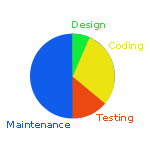
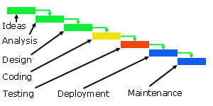
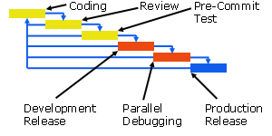

|
Development |

|
|
Software Development Analyze small problems that lend themselves to a programming solution. Life Cycle | Waterfall Model | Open Source Model | Design | Exercises | First and foremost, software development is about getting it right. Software development is not about getting something that sort of works out on time, but about getting it right, even if it takes more time to do so. This is a discipline where perfection is crucial. Life Cycle The life cycle of work of software extends from concept inception through testing and maintenance to retirement.  About half of the maintanence time is often spent understanding the source code and the documentation. Quality For a program to have longevity, it helps to have a quality design. What makes a quality design:
Waterfall Model Check out this Computerworld article about software development. The waterfall model is the traditional model of the software life cycle. The waterfall model is a linear model that progresses from ideas to maintenance, step by step.  The successive steps in the waterfall model are:
Implementation Examples: Deficiencies Notable deficiencies of the waterfall model include:
Open Source Model The Open Source model is an incremental, non-hierarchical model. Its focus is user-driven rather than concept driven. The rise of the Internet enabled this approach. Advantages over the waterfall model include:
 The steps in the Open Source model include:
Implementation Examples: Features Notable features of the Open Source model include:
Deficiencies Notable 'deficiencies' of the Open Source model include:
Design Design is about the relationship of parts to the whole. A program may work, but be poorly designed. If the program models a real world situation, the program will more than likely be simpler to upgrade. Function-Oriented Design Function-oriented gained popularity in North America:
Data-Oriented Design Data-oriented gained popularity in Europe. In the 1970's, Michael Jackson developed a modelling method based on structured programming principles:
Object-Oriented Design Object-oriented design (next semester). Design Tables Sometimes, we can simplify the complexity of a problem by using tables. Decision Tables Decision tables organize a set of compound conditions into simple selection constructs.
Truth Tables Truth tables categorize the possible results of compound conditions.
Exercises
|
||||||||||||||||||||||||||||||||||||||||||||||||||||||||||

|
|
Top
|
|
|
Next: Standards
|
| Designed by Chris Szalwinski | Copying From This Site |